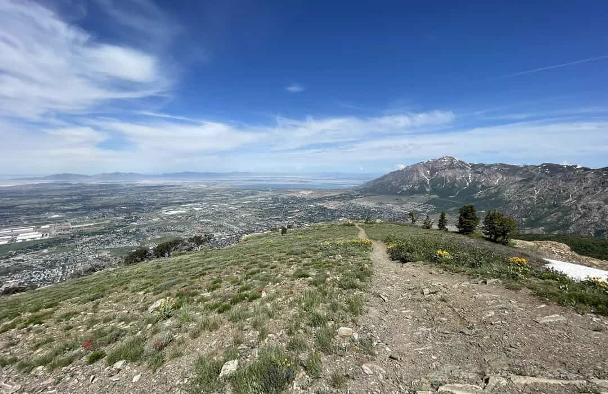

Christian Wilson
About
Hey, my name is Christian Wilson. I currently live in Ogden UT. I started BYU Pathway the first term of 2025. I took the fourth term off and I'm back for more. My main hobbies are going to the gym, making music, and playing chess. While making a career out of music composition would be nice, software development is a close second to that, and I'm hoping that career opportunities in this sector will help enable my music composition efforts.
Where I Live
I live in the more metropolitan part of Northern Utah. It feels relatively quiet, with many mountaineers, hunters, hikers and skiiers.